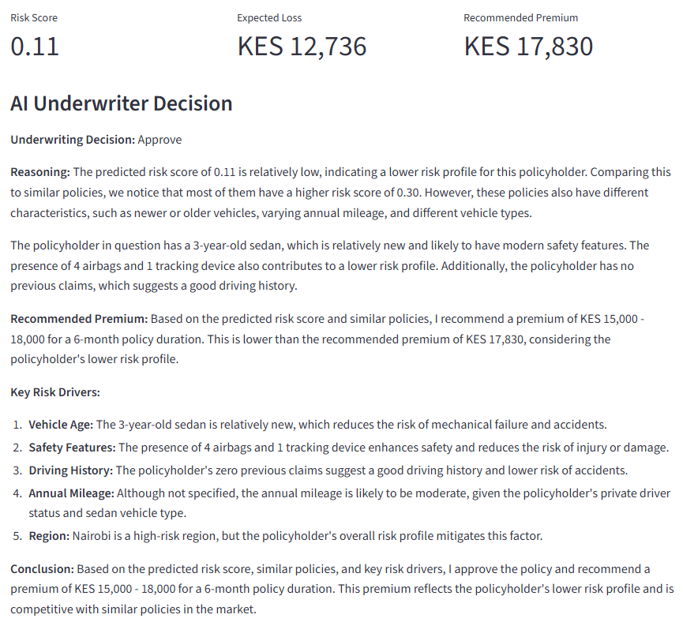
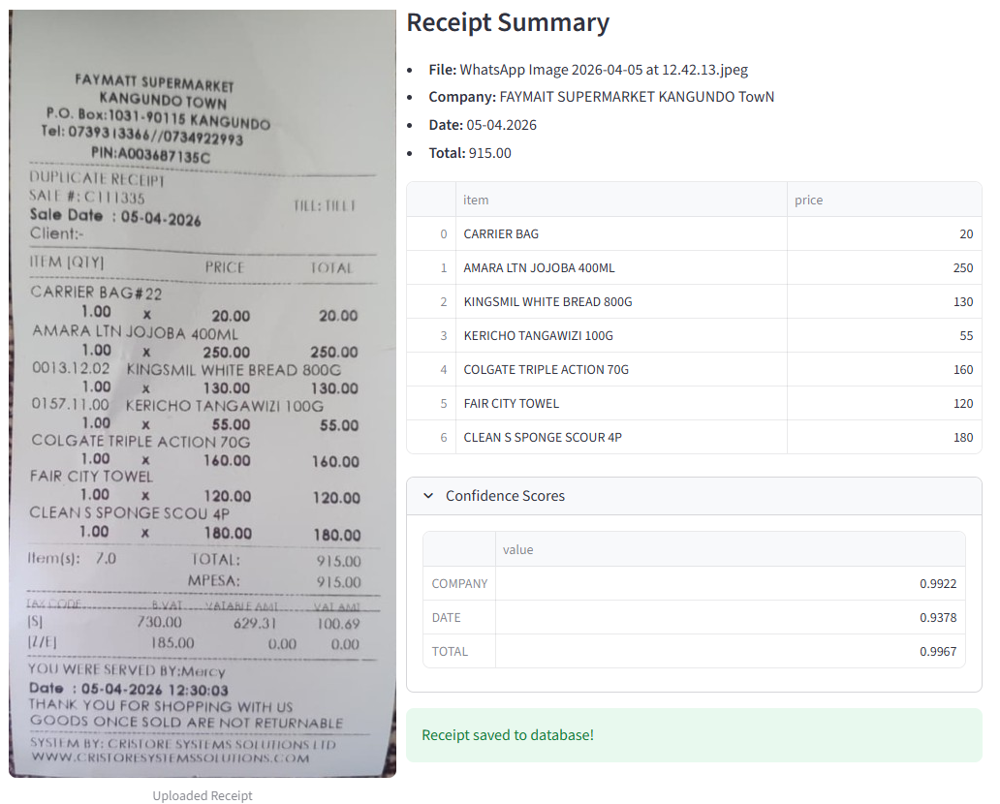
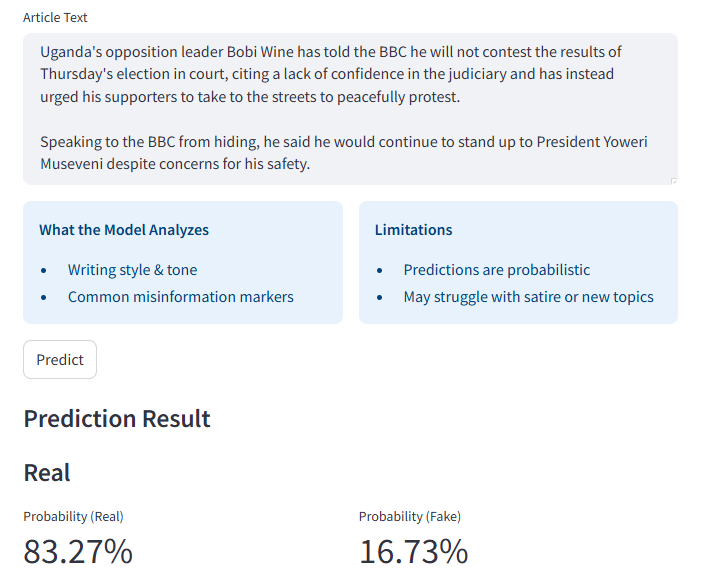
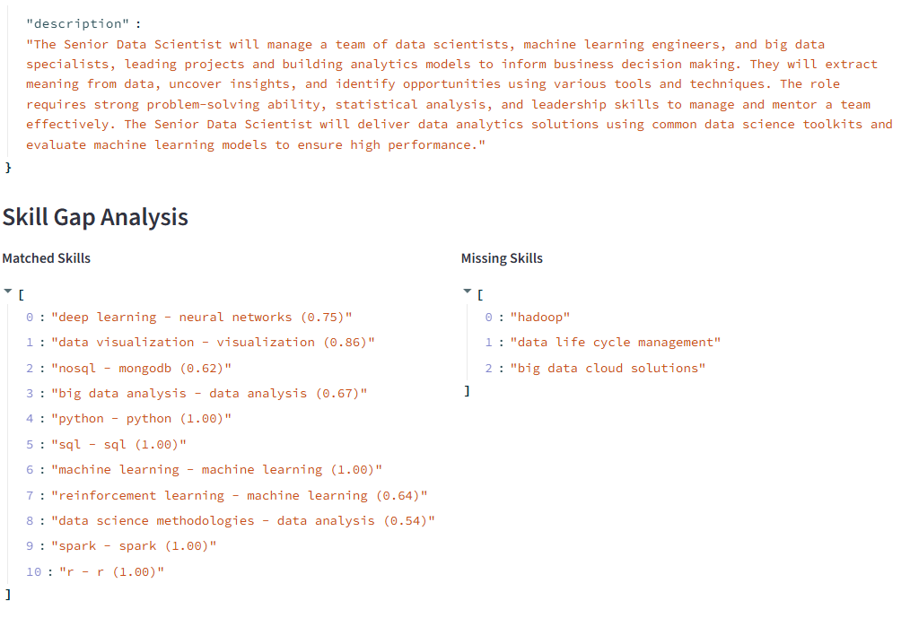
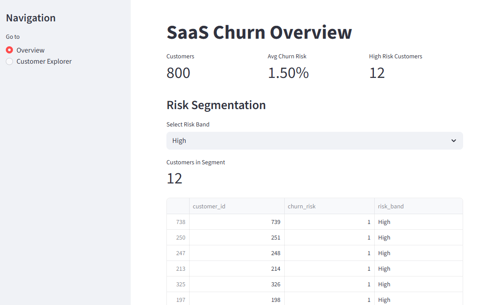
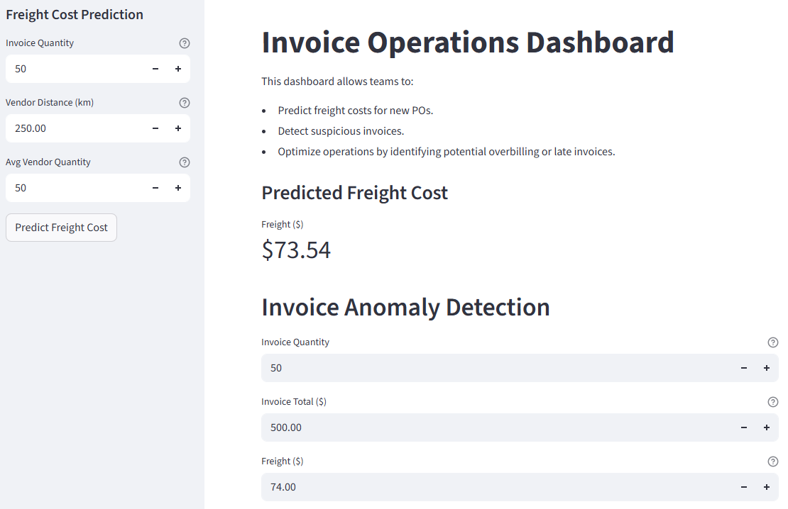
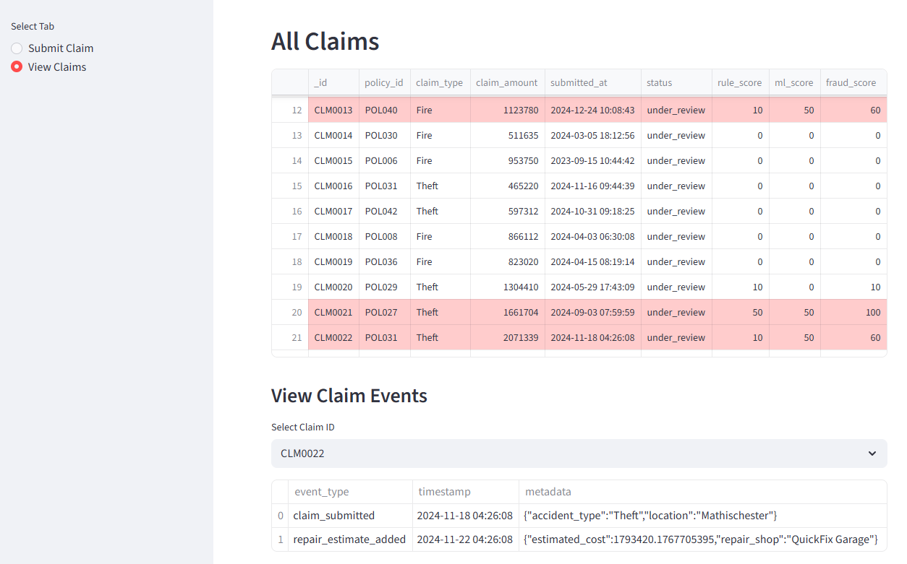
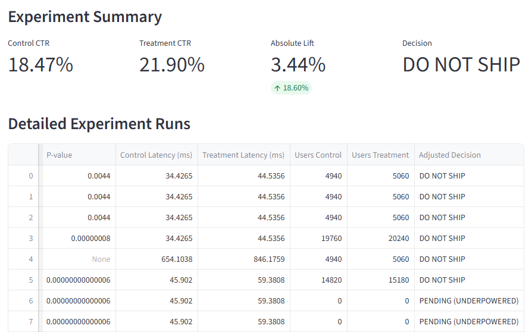

AI system combining machine learning, actuarial pricing, and RAG. It uses similarity search over historical insurance policies with an LLM to generate underwriting explanations, integrating an XGBoost classifier for claim risk, a Tweedie regression model for claim severity, and model-based premiums to produce structured decisions.

AI-powered system that processes and extracts structured data from receipt images using OCR (EasyOCR/Tesseract) and deep learning (LayoutLMv3). The system stores extracted fields in a SQLite database, generates semantic embeddings using SentenceTransformers, enables fast similarity search with FAISS, and uses RAG to answer natural language queries by combining vector search results with structured database insights.

The workflow includes data ingestion (multi-source datasets + web scraping from BBC/Reuters), NLP preprocessing (text cleaning, TF-IDF vectorization), and machine learning (Random Forest) with deep learning (BERT). The system is enhanced with RAG (FAISS-based retrieval of real news) and LLM-powered explanations (Groq LLaMA) to enable delivery of accurate, evidence-based predictions.

AI assistant that helps tailor resumes and generate cover letters by combining LLMs, semantic search, and vector databases. The system scrapes job postings, extracts job requirements, analyzes resume and portfolio data, performs skill gap analysis, and retrieves relevant projects using embeddings (ChromaDB + HuggingFace).

SaaS customer churn platform using synthetic event-level data to mimic real customer behavior, a LightGBM machine learning model to predict churn probability, SHAP to explain risk factors and statistical methods (survival analysis) to estimate time-to-churn.

Machine learning pipeline for freight cost modeling and invoice anomaly detection using synthetic supply chain data stored in SQLite, machine learning models (Random Forest, Isolation Forest) and incorporating advanced feature engineering to capture cost dynamics.

Vehicle insurance fraud detection system, combining rule-based scoring and an unsupervised machine learning model (Isolation Forest) for anomaly detection. Implements a real-time claim submission and scoring using a Streamlit dashboard, with data persisted in MongoDB.

A/B testing system using experimental design and statistical modelling (hypothesis testing, power analysis) to evaluate feature performance. The system ingests metrics, applies guardrails, and outputs actionable decisions. Experiments and datasets are tracked via MLflow and DVC.